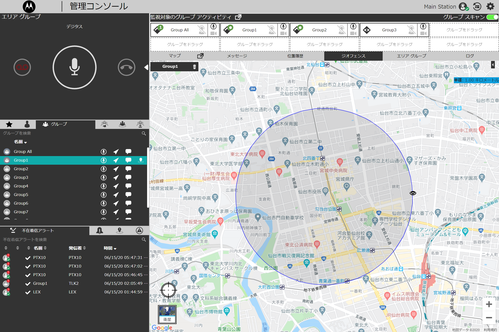
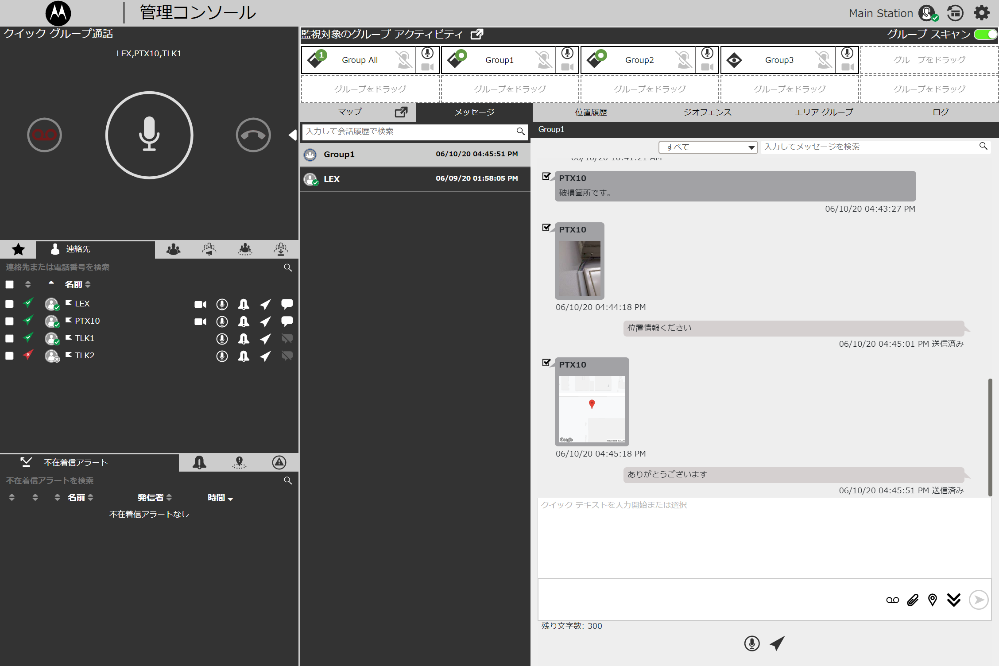
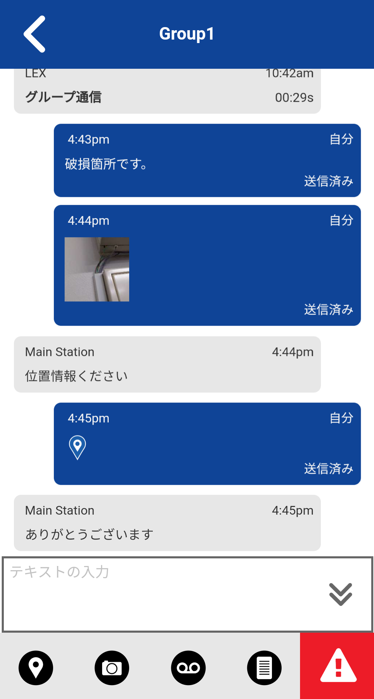
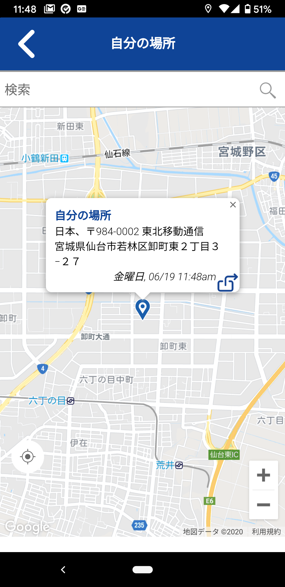
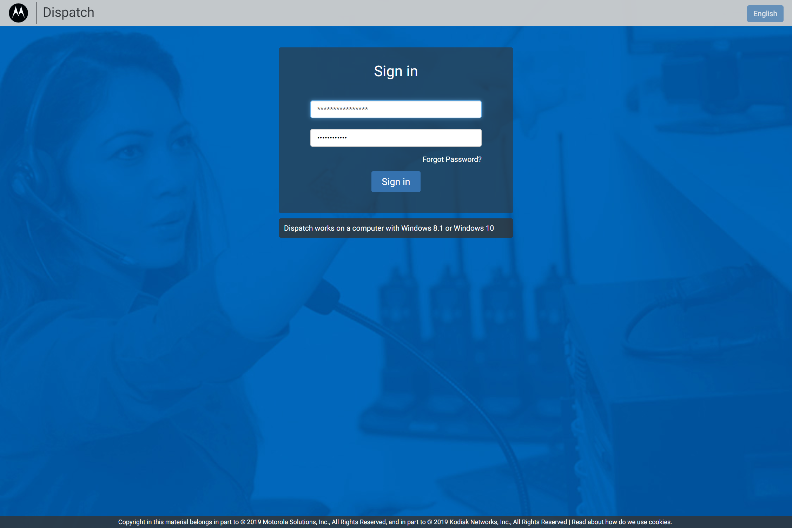
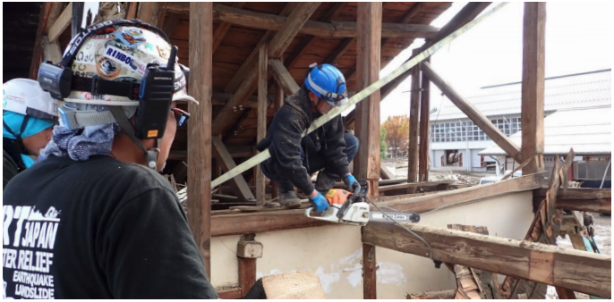

実際の画面
管理コンソールとアプリの
画面を実際にご覧ください。






消防・防災の現場では、一秒の遅れが結果を左右します。全国LTE網と冗長サーバーで常時稼働、 既存無線との相互接続、通話録音・位置情報・緊急発報までを一台に統合。 現場の判断を支える"信頼"のために選ばれるIP無線、それが WAVE PTX です。
消防・防災で選ばれる理由
消防・防災・自治体の現場は、一般業務とは求められる水準が違います。命に関わる通信だからこそ、WAVE PTX は単なる無線機能ではなく、インフラとしての確実性を設計しています。
指令室から現場車両、出動隊員までを同一グループで即時接続。PTT一発で全員に届き、グループ単位・個別単位の切替も瞬時。現場指揮の意思決定を早めます。
デジタル簡易無線・IP無線・業務用無線など、既設の通信資産をそのまま活かしながら、WAVE PTX を追加配備可能。段階的な更新で既存の運用フローを止めません。
携帯キャリアのLTE網を活用。都市部から山間部・離島まで、従来無線の到達限界を超えた広域運用を実現します。出動範囲が広い消防本部でも、基地局追加なく即日対応。
防塵防水筐体、大音量スピーカー、厚手手袋でも押し間違えない大型PTTボタン。炎・雨・粉塵・夜間の過酷な現場環境を想定した設計で、装備の一部として機能します。
全通話を自動録音、事後検証・研修・報告資料にそのまま活用可能。GPSによる隊員位置のリアルタイム把握、緊急発報ボタンによる一斉通報も標準搭載しています。
設計・導入設置・職員訓練・運用保守までを一括して月額サブスクリプションで提供。担当者の異動や機器更新のタイミングでも、継続的に現場運用を支える体制です。
想定ユースケース
具体的な運用イメージをご紹介します。個別の導入事例については、お打ち合わせ時に詳細をお伝えいたします。
指令室の管理コンソールから全出動隊の位置と通話をリアルタイムに把握。車両ごとのグループ分けと全隊一斉通信を瞬時に切り替え、現場指揮の遅延を最小化します。
基幹無線が停止・輻輳した際のセカンドラインとして配備。全国LTE網と冗長サーバーにより、被災エリア外から指揮系統を維持。自治体BCPの通信レイヤーを強化します。
搬送中の状況を音声・画像・テキストで病院側へ連続共有。現着までの処置方針決定を支援し、到着後の引継ぎを円滑化。医療DXとの接続レイヤーにも活用可能です。
中継局を介さないIP通信のため、LTEが届く範囲内であれば山岳・離島・地下を問わず運用可能。隊員の位置情報を地図上で常時把握し、単独行動時の安全確保にも寄与します。
WAVE PTXの3つのキーワード
現場のカメラ映像を司令室や管理コンソールにリアルタイム配信。災害対応・警備・工事監理など、「目で見て判断したい」すべての場面で活躍します。映像を見ながら同時にPTT音声通信も可能です。
ボタンひとつで即座に繋がる。広帯域の高品質音声で、ノイズの多い現場でも声が鮮明に届きます。緊急時に「押して→話す」この直感的な操作が、命を守ることもあります。
携帯電話ネットワークを使用するため、全国どこでも繋がります。山間部・離島・地下・広大な工事現場——従来の無線では届かなかった場所でも通信を維持。東西のAzureリージョンでサーバーが冗長化されています。
詳細機能
地図上でメンバー全員の現在地をリアルタイム確認。緊急時に誰がどこにいるかを即座に把握できます。
テキストだけでなく、写真・動画・PDF・位置情報をグループまたは個別にスレッド形式で共有できます。
インストール不要。既存PCのブラウザからログインするだけで、どこからでも現場全体を管理・監視できます。
配信中の端末は映像と音声を同時送信。視聴側はその映像を見ながらPTT発信も可能。状況変化をリアルタイムに全員で共有します。
実際の画面





製品ラインナップ
現場スタッフの装備形態・運用環境に応じて、ハンドヘルド・車載・ウェアラブル・スマホアプリまで、同一ネットワーク上で混在運用が可能です。
ライブビデオ配信機能を搭載した最上位モデル。PTT通信・GPS・メッセージに加え、現場映像をリアルタイムで本部に届けられます。指揮官・大隊長クラスの基幹スタッフに最適です。
音声通信に特化したシンプルで使いやすいハンドヘルド。直感的な操作と終日使用に十分なバッテリー、スリムで堅牢な筐体。PTT通信とGPS機能を必要最低限にまとめ、現場隊員全員への配布に最適です。
消防車・指揮車・救急車への搭載を想定した据置モデル。ハンドマイクでの操作、車両電源からの安定給電、大型スピーカーによる車内視認性を確保。出動中の指揮車両を"移動する指令室"に変えます。
超小型・超軽量のクリップ装着型モデル。防火衣・ベルト・肩口への固定に対応し、ハンズフリーでのPTT通信を実現。イヤホンやスピーカーマイクと組み合わせることで、両手を使う作業中でも通信を途切れさせません。
従来の業務用デジタル無線（DMR）と WAVE PTX（LTE）を 1 台に統合した Android ベースの無線機。既存のデジタル簡易無線網をそのまま使いながら、LTE経由で指令室や他拠点にも同時接続可能。無線インフラの過渡期に最適な"橋渡し"機種です。
iOS / Android スマートフォンにインストールするだけで、専用端末と同じグループに参加可能。指令室の管理者・本部スタッフ・兼務職員など、専用機の配備が難しい層にも WAVE PTX の通信網を広げられます。
幅広い業界での導入
商業施設・災害支援・NGO・イベント運営など、音声通信の確実性が求められる現場で幅広く活用されています。
大丸福岡天神店
従来の無線機ではフロアをまたいだ通信に課題がありました。WAVE PTX TLK100の導入により、音声はノイズなく鮮明に届き、建物全体をカバーする防災連絡体制を構築。スタッフ全員への一斉通報も可能になりました。

日本財団 災害エキスパートファーム / 災害NGO「結」
広大な被災エリアで複数の支援チームを同時に指揮するには、従来の無線では限界がありました。WAVE PTXのGPS管理と音声PTTを組み合わせることで、被災地全体の状況把握と迅速な人員配置を実現しました。
WAVE PTXは、警察・消防など緊急対応機関向けに整備された米国の専用LTEネットワーク「FirstNet」と同等規格。商用PTTサービスとして世界最大の運用局数を誇ります。
日本では Microsoft Azure の東西2サーバーで冗長化。一方が落ちても即座にもう一方へ切り替え、通信を維持します。
オーディオソリューション
ワイヤレスリモート スピーカマイク。胸元や肩口に装着して、端末をバッグや腰に付けたままハンズフリーでPTT通信が可能。堅牢設計で悪天候下でも安心です。
PTTボタン付き ワイヤレスイヤピース。周囲に通信内容を聞かせたくない警備・接客現場に最適。片耳装着で周囲の音も聞き取れる設計で、安全性を損ないません。
システムと容量
資料ダウンロード
製品の詳細仕様や導入検討に必要な資料をPDFでご用意しています。社内共有や稟議にご活用ください。
※ カタログは PDF 形式で別タブにて表示されます。閲覧には Adobe Acrobat Reader をご利用ください。
百聞は一見にしかず。現場でどう使えるか、まずはデモで体験してください。お見積もり・ご相談は無料です。
デモ・お見積もりを依頼するお電話でのご相談：0120-933-992（平日 9:00〜18:00）